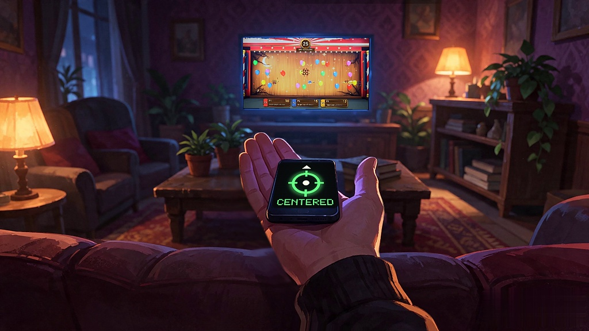

Prólogo · Center your phone centrar · centrar_still
Imagen fija: el celu acostado en la palma, apuntando a la tele. No hace falta animarla.
Tocá el video que más te guste en cada gesto (se guarda en este navegador). Cuando termines, bajá hasta el final, tocá COPIAR MIS ELECCIONES y mandáselo a Nico por WhatsApp.
Al lado, lo que tiene elegido Nico ahora. En verde: donde coinciden.
Pegá acá el texto que te mandó (empieza con TUTOS y su nombre) y tocá CARGAR. Queda guardado en este navegador.
Las tomas que eligió COCO, que son las que mejor se entienden, y las que vamos a mejorar. El pedido es solo agregar cuadros intermedios para que la animación sea suave y no se vea a saltos. No cambia nada más: mismas poses, mismo recorrido del movimiento y misma velocidad. Cada vuelta dura lo mismo que ahora; donde hoy hay 8 cuadros por segundo pasa a haber 24.
Cada ficha tiene el video actual, el primer cuadro en 1280×720 para usar de referencia (primer y último cuadro iguales, así cierra el loop). Se respetan las poses clave, la luz y la estilización del arte; qué movimiento tiene que entenderse y el prompt listo para pegar.

Imagen fija: el celu acostado en la palma, apuntando a la tele. No hace falta animarla.
Trote en el lugar. El celu va SIEMPRE en el puño derecho. Brazo derecho adelante y arriba, después atrás y abajo hasta la cadera; el puño izquierdo vacío hace lo contrario. Rodillas suben un poco.
Ciclo actual: 12 cuadros a 8 fps = 1.5 s por vuelta (el video repite el ciclo 3 veces). El nuevo tiene que tener el MISMO ciclo de 1.5 s, pero a 24 fps: 36 cuadros por vuelta en vez de 12.
primer cuadro (jpg 1280×720) · video actual (mp4)
Animate this exact illustration. Keep the same character, outfit, room, lighting, painted art style and framing (side view); the camera does not move. The kid jogs in place gripping the phone in one fist, arms pumping forward and back in a steady running rhythm. IMPORTANT: this is the same animation as the reference video, only smoother. Keep every key pose of the reference exactly as drawn (the in-betweens only connect them), the same path of the motion and the exact same timing: one full cycle every 1.5 seconds, same rhythm and speed. Preserve the exact lighting (warm amber lamps, purple and burgundy shadows, cool TV glow), the painted Arcane-like stylization, brush texture, colors, proportions and character design; no realism drift, no restyling. Only add in-between frames (24 fps instead of 8) so it no longer looks stepped. Do not slow it down, do not speed it up, do not add new gestures. Hands and phone stay intact, the phone never changes hands. The TV keeps showing the same game image. Perfect seamless loop (last frame matches the first). No text, no cuts, no zoom, no camera shake.
De espaldas. Las dos manos agarran el celu y tiran fuerte hacia abajo, como trepando una soga, y vuelven a subir.
Ciclo actual: 8 cuadros a 8 fps = 1 s por vuelta (el video repite el ciclo 4 veces). El nuevo tiene que tener el MISMO ciclo de 1 s, pero a 24 fps: 24 cuadros por vuelta en vez de 8.
primer cuadro (jpg 1280×720) · video actual (mp4)
Animate this exact illustration. Keep the same character, outfit, room, lighting, painted art style and framing (view from behind); the camera does not move. The kid yanks the phone up and down hard with both hands, like pulling a rope. IMPORTANT: this is the same animation as the reference video, only smoother. Keep every key pose of the reference exactly as drawn (the in-betweens only connect them), the same path of the motion and the exact same timing: one full cycle every 1 seconds, same rhythm and speed. Preserve the exact lighting (warm amber lamps, purple and burgundy shadows, cool TV glow), the painted Arcane-like stylization, brush texture, colors, proportions and character design; no realism drift, no restyling. Only add in-between frames (24 fps instead of 8) so it no longer looks stepped. Do not slow it down, do not speed it up, do not add new gestures. Hands and phone stay intact, the phone never changes hands. The TV keeps showing the same game image. Perfect seamless loop (last frame matches the first). No text, no cuts, no zoom, no camera shake.
Apunta el celu a la tele como un soplete y lo mantiene firme mientras dispara, con una vibración chiquita de retroceso.
Ciclo actual: 8 cuadros a 8 fps = 1 s por vuelta (el video repite el ciclo 4 veces). El nuevo tiene que tener el MISMO ciclo de 1 s, pero a 24 fps: 24 cuadros por vuelta en vez de 8.
primer cuadro (jpg 1280×720) · video actual (mp4)
Animate this exact illustration. Keep the same character, outfit, room, lighting, painted art style and framing (3/4 view from behind and to the side); the camera does not move. The kid points the phone at the TV like a blowtorch and holds it steady while firing, with a small recoil wobble. IMPORTANT: this is the same animation as the reference video, only smoother. Keep every key pose of the reference exactly as drawn (the in-betweens only connect them), the same path of the motion and the exact same timing: one full cycle every 1 seconds, same rhythm and speed. Preserve the exact lighting (warm amber lamps, purple and burgundy shadows, cool TV glow), the painted Arcane-like stylization, brush texture, colors, proportions and character design; no realism drift, no restyling. Only add in-between frames (24 fps instead of 8) so it no longer looks stepped. Do not slow it down, do not speed it up, do not add new gestures. Hands and phone stay intact, the phone never changes hands. The TV keeps showing the same game image. Perfect seamless loop (last frame matches the first). No text, no cuts, no zoom, no camera shake.
De costado. Las dos manos empujan el celu hacia adelante con fuerza, como abriendo una reja pesada, y vuelven a la posición de inicio.
Ciclo actual: 8 cuadros a 8 fps = 1 s por vuelta (el video repite el ciclo 4 veces). El nuevo tiene que tener el MISMO ciclo de 1 s, pero a 24 fps: 24 cuadros por vuelta en vez de 8.
primer cuadro (jpg 1280×720) · video actual (mp4)
Animate this exact illustration. Keep the same character, outfit, room, lighting, painted art style and framing (side view); the camera does not move. The kid shoves the phone forward hard with both hands, like pushing a heavy gate open, then pulls back to start. IMPORTANT: this is the same animation as the reference video, only smoother. Keep every key pose of the reference exactly as drawn (the in-betweens only connect them), the same path of the motion and the exact same timing: one full cycle every 1 seconds, same rhythm and speed. Preserve the exact lighting (warm amber lamps, purple and burgundy shadows, cool TV glow), the painted Arcane-like stylization, brush texture, colors, proportions and character design; no realism drift, no restyling. Only add in-between frames (24 fps instead of 8) so it no longer looks stepped. Do not slow it down, do not speed it up, do not add new gestures. Hands and phone stay intact, the phone never changes hands. The TV keeps showing the same game image. Perfect seamless loop (last frame matches the first). No text, no cuts, no zoom, no camera shake.
Primera persona. El celu acostado en las dos manos se inclina adelante, atrás, a la izquierda y a la derecha para caminar.
Ciclo actual: 8 cuadros a 8 fps = 1 s por vuelta (el video repite el ciclo 4 veces). El nuevo tiene que tener el MISMO ciclo de 1 s, pero a 24 fps: 24 cuadros por vuelta en vez de 8.
primer cuadro (jpg 1280×720) · video actual (mp4)
Animate this exact illustration. Keep the same character, outfit, room, lighting, painted art style and framing (first-person POV, both hands holding the phone in front of the camera); the camera does not move. The kid tilts the phone lying flat in both hands, forward, back, left and right, like a labyrinth board. IMPORTANT: this is the same animation as the reference video, only smoother. Keep every key pose of the reference exactly as drawn (the in-betweens only connect them), the same path of the motion and the exact same timing: one full cycle every 1 seconds, same rhythm and speed. Preserve the exact lighting (warm amber lamps, purple and burgundy shadows, cool TV glow), the painted Arcane-like stylization, brush texture, colors, proportions and character design; no realism drift, no restyling. Only add in-between frames (24 fps instead of 8) so it no longer looks stepped. Do not slow it down, do not speed it up, do not add new gestures. Hands and phone stay intact, the phone never changes hands. The TV keeps showing the same game image. Perfect seamless loop (last frame matches the first). No text, no cuts, no zoom, no camera shake.
Da vuelta el celu para que la pantalla mire al piso y lo vuelve a poner derecho.
Ciclo actual: 8 cuadros a 8 fps = 1 s por vuelta (el video repite el ciclo 4 veces). El nuevo tiene que tener el MISMO ciclo de 1 s, pero a 24 fps: 24 cuadros por vuelta en vez de 8.
primer cuadro (jpg 1280×720) · video actual (mp4)
Animate this exact illustration. Keep the same character, outfit, room, lighting, painted art style and framing (3/4 view from behind and to the side); the camera does not move. The kid flips the phone over so the screen faces down, then back. IMPORTANT: this is the same animation as the reference video, only smoother. Keep every key pose of the reference exactly as drawn (the in-betweens only connect them), the same path of the motion and the exact same timing: one full cycle every 1 seconds, same rhythm and speed. Preserve the exact lighting (warm amber lamps, purple and burgundy shadows, cool TV glow), the painted Arcane-like stylization, brush texture, colors, proportions and character design; no realism drift, no restyling. Only add in-between frames (24 fps instead of 8) so it no longer looks stepped. Do not slow it down, do not speed it up, do not add new gestures. Hands and phone stay intact, the phone never changes hands. The TV keeps showing the same game image. Perfect seamless loop (last frame matches the first). No text, no cuts, no zoom, no camera shake.
Primera persona. El celu en una mano como pistola apuntando a la tele: golpe de muñeca hacia arriba para disparar y vuelve a apuntar.
Ciclo actual: 8 cuadros a 8 fps = 1 s por vuelta (el video repite el ciclo 4 veces). El nuevo tiene que tener el MISMO ciclo de 1 s, pero a 24 fps: 24 cuadros por vuelta en vez de 8.
primer cuadro (jpg 1280×720) · video actual (mp4)
Animate this exact illustration. Keep the same character, outfit, room, lighting, painted art style and framing (first-person POV, both hands holding the phone in front of the camera); the camera does not move. The kid holds the phone like a pistol aimed at the TV and flicks the wrist up to shoot, then re-aims. IMPORTANT: this is the same animation as the reference video, only smoother. Keep every key pose of the reference exactly as drawn (the in-betweens only connect them), the same path of the motion and the exact same timing: one full cycle every 1 seconds, same rhythm and speed. Preserve the exact lighting (warm amber lamps, purple and burgundy shadows, cool TV glow), the painted Arcane-like stylization, brush texture, colors, proportions and character design; no realism drift, no restyling. Only add in-between frames (24 fps instead of 8) so it no longer looks stepped. Do not slow it down, do not speed it up, do not add new gestures. Hands and phone stay intact, the phone never changes hands. The TV keeps showing the same game image. Perfect seamless loop (last frame matches the first). No text, no cuts, no zoom, no camera shake.
De costado. La punta del celu baja hacia el piso y vuelve a subir apuntando a la tele, como recargar un revólver.
Ciclo actual: 8 cuadros a 8 fps = 1 s por vuelta (el video repite el ciclo 4 veces). El nuevo tiene que tener el MISMO ciclo de 1 s, pero a 24 fps: 24 cuadros por vuelta en vez de 8.
primer cuadro (jpg 1280×720) · video actual (mp4)
Animate this exact illustration. Keep the same character, outfit, room, lighting, painted art style and framing (side view); the camera does not move. The kid points the tip of the phone at the floor and swings it back up, like reloading a revolver. IMPORTANT: this is the same animation as the reference video, only smoother. Keep every key pose of the reference exactly as drawn (the in-betweens only connect them), the same path of the motion and the exact same timing: one full cycle every 1 seconds, same rhythm and speed. Preserve the exact lighting (warm amber lamps, purple and burgundy shadows, cool TV glow), the painted Arcane-like stylization, brush texture, colors, proportions and character design; no realism drift, no restyling. Only add in-between frames (24 fps instead of 8) so it no longer looks stepped. Do not slow it down, do not speed it up, do not add new gestures. Hands and phone stay intact, the phone never changes hands. The TV keeps showing the same game image. Perfect seamless loop (last frame matches the first). No text, no cuts, no zoom, no camera shake.
Primer plano de las dos manos con el celu acostado como un joystick: el pulgar izquierdo mueve la palanca y el derecho toca los botones.
Ciclo actual: 8 cuadros a 8 fps = 1 s por vuelta (el video repite el ciclo 4 veces). El nuevo tiene que tener el MISMO ciclo de 1 s, pero a 24 fps: 24 cuadros por vuelta en vez de 8.
primer cuadro (jpg 1280×720) · video actual (mp4)
Animate this exact illustration. Keep the same character, outfit, room, lighting, painted art style and framing (close-up of both hands holding the phone); the camera does not move. The kid holds the phone sideways like a gamepad, left thumb moving the stick, right thumb pressing buttons. IMPORTANT: this is the same animation as the reference video, only smoother. Keep every key pose of the reference exactly as drawn (the in-betweens only connect them), the same path of the motion and the exact same timing: one full cycle every 1 seconds, same rhythm and speed. Preserve the exact lighting (warm amber lamps, purple and burgundy shadows, cool TV glow), the painted Arcane-like stylization, brush texture, colors, proportions and character design; no realism drift, no restyling. Only add in-between frames (24 fps instead of 8) so it no longer looks stepped. Do not slow it down, do not speed it up, do not add new gestures. Hands and phone stay intact, the phone never changes hands. The TV keeps showing the same game image. Perfect seamless loop (last frame matches the first). No text, no cuts, no zoom, no camera shake.
Gira el celu una vuelta entera de 360° como un volante para abrir la válvula.
Ciclo actual: 8 cuadros a 8 fps = 1 s por vuelta (el video repite el ciclo 4 veces). El nuevo tiene que tener el MISMO ciclo de 1 s, pero a 24 fps: 24 cuadros por vuelta en vez de 8.
primer cuadro (jpg 1280×720) · video actual (mp4)
Animate this exact illustration. Keep the same character, outfit, room, lighting, painted art style and framing (3/4 view from behind and to the side); the camera does not move. The kid turns the phone a full 360 degrees like a steering wheel to open a valve. IMPORTANT: this is the same animation as the reference video, only smoother. Keep every key pose of the reference exactly as drawn (the in-betweens only connect them), the same path of the motion and the exact same timing: one full cycle every 1 seconds, same rhythm and speed. Preserve the exact lighting (warm amber lamps, purple and burgundy shadows, cool TV glow), the painted Arcane-like stylization, brush texture, colors, proportions and character design; no realism drift, no restyling. Only add in-between frames (24 fps instead of 8) so it no longer looks stepped. Do not slow it down, do not speed it up, do not add new gestures. Hands and phone stay intact, the phone never changes hands. The TV keeps showing the same game image. Perfect seamless loop (last frame matches the first). No text, no cuts, no zoom, no camera shake.
El celu acostado como un manubrio: los pulgares tocan alternados (pedalear) y se inclina como un volante para doblar.
Ciclo actual: 8 cuadros a 8 fps = 1 s por vuelta (el video repite el ciclo 4 veces). El nuevo tiene que tener el MISMO ciclo de 1 s, pero a 24 fps: 24 cuadros por vuelta en vez de 8.
primer cuadro (jpg 1280×720) · video actual (mp4)
Animate this exact illustration. Keep the same character, outfit, room, lighting, painted art style and framing (3/4 view from behind and to the side); the camera does not move. The kid holds the phone sideways like handlebars, thumbs tapping alternately, tilting it like a wheel to steer. IMPORTANT: this is the same animation as the reference video, only smoother. Keep every key pose of the reference exactly as drawn (the in-betweens only connect them), the same path of the motion and the exact same timing: one full cycle every 1 seconds, same rhythm and speed. Preserve the exact lighting (warm amber lamps, purple and burgundy shadows, cool TV glow), the painted Arcane-like stylization, brush texture, colors, proportions and character design; no realism drift, no restyling. Only add in-between frames (24 fps instead of 8) so it no longer looks stepped. Do not slow it down, do not speed it up, do not add new gestures. Hands and phone stay intact, the phone never changes hands. The TV keeps showing the same game image. Perfect seamless loop (last frame matches the first). No text, no cuts, no zoom, no camera shake.
De costado. Tirón del celu hacia arriba, hacia el pecho, como levantar la rueda de la bici, y lo baja.
Ciclo actual: 8 cuadros a 8 fps = 1 s por vuelta (el video repite el ciclo 4 veces). El nuevo tiene que tener el MISMO ciclo de 1 s, pero a 24 fps: 24 cuadros por vuelta en vez de 8.
primer cuadro (jpg 1280×720) · video actual (mp4)
Animate this exact illustration. Keep the same character, outfit, room, lighting, painted art style and framing (side view); the camera does not move. The kid pulls the phone sharply up toward the chest, like popping a wheelie on a bike, then lowers it. IMPORTANT: this is the same animation as the reference video, only smoother. Keep every key pose of the reference exactly as drawn (the in-betweens only connect them), the same path of the motion and the exact same timing: one full cycle every 1 seconds, same rhythm and speed. Preserve the exact lighting (warm amber lamps, purple and burgundy shadows, cool TV glow), the painted Arcane-like stylization, brush texture, colors, proportions and character design; no realism drift, no restyling. Only add in-between frames (24 fps instead of 8) so it no longer looks stepped. Do not slow it down, do not speed it up, do not add new gestures. Hands and phone stay intact, the phone never changes hands. The TV keeps showing the same game image. Perfect seamless loop (last frame matches the first). No text, no cuts, no zoom, no camera shake.
Primer plano de las dos manos con el celu acostado: pulgar izquierdo en la palanca, el derecho toca DASH y BOOST.
Ciclo actual: 8 cuadros a 8 fps = 1 s por vuelta (el video repite el ciclo 4 veces). El nuevo tiene que tener el MISMO ciclo de 1 s, pero a 24 fps: 24 cuadros por vuelta en vez de 8.
primer cuadro (jpg 1280×720) · video actual (mp4)
Animate this exact illustration. Keep the same character, outfit, room, lighting, painted art style and framing (close-up of both hands holding the phone); the camera does not move. The kid holds the phone sideways like a gamepad, left thumb on the stick, right thumb tapping DASH and BOOST. IMPORTANT: this is the same animation as the reference video, only smoother. Keep every key pose of the reference exactly as drawn (the in-betweens only connect them), the same path of the motion and the exact same timing: one full cycle every 1 seconds, same rhythm and speed. Preserve the exact lighting (warm amber lamps, purple and burgundy shadows, cool TV glow), the painted Arcane-like stylization, brush texture, colors, proportions and character design; no realism drift, no restyling. Only add in-between frames (24 fps instead of 8) so it no longer looks stepped. Do not slow it down, do not speed it up, do not add new gestures. Hands and phone stay intact, the phone never changes hands. The TV keeps showing the same game image. Perfect seamless loop (last frame matches the first). No text, no cuts, no zoom, no camera shake.
Primera persona. El celu horizontal da una vuelta entera como un volante, girando sobre su centro; las manos se turnan para agarrarlo sin cruzar los brazos.
Ciclo actual: 8 cuadros a 8 fps = 1 s por vuelta (el video repite el ciclo 4 veces). El nuevo tiene que tener el MISMO ciclo de 1 s, pero a 24 fps: 24 cuadros por vuelta en vez de 8.
primer cuadro (jpg 1280×720) · video actual (mp4)
Animate this exact illustration. Keep the same character, outfit, room, lighting, painted art style and framing (first-person POV, both hands holding the phone in front of the camera); the camera does not move. The kid turns the phone a full spin like a steering wheel to summon a power. IMPORTANT: this is the same animation as the reference video, only smoother. Keep every key pose of the reference exactly as drawn (the in-betweens only connect them), the same path of the motion and the exact same timing: one full cycle every 1 seconds, same rhythm and speed. Preserve the exact lighting (warm amber lamps, purple and burgundy shadows, cool TV glow), the painted Arcane-like stylization, brush texture, colors, proportions and character design; no realism drift, no restyling. Only add in-between frames (24 fps instead of 8) so it no longer looks stepped. Do not slow it down, do not speed it up, do not add new gestures. Hands and phone stay intact, the phone never changes hands. The TV keeps showing the same game image. Perfect seamless loop (last frame matches the first). No text, no cuts, no zoom, no camera shake.
Primera persona. El celu acostado en las dos manos rola a la izquierda y a la derecha y la punta sube y baja, como sintonizar una radio.
Ciclo actual: 8 cuadros a 8 fps = 1 s por vuelta (el video repite el ciclo 4 veces). El nuevo tiene que tener el MISMO ciclo de 1 s, pero a 24 fps: 24 cuadros por vuelta en vez de 8.
primer cuadro (jpg 1280×720) · video actual (mp4)
Animate this exact illustration. Keep the same character, outfit, room, lighting, painted art style and framing (first-person POV, both hands holding the phone in front of the camera); the camera does not move. The kid rolls the phone left and right and tilts its top up and down, like tuning a radio dial. IMPORTANT: this is the same animation as the reference video, only smoother. Keep every key pose of the reference exactly as drawn (the in-betweens only connect them), the same path of the motion and the exact same timing: one full cycle every 1 seconds, same rhythm and speed. Preserve the exact lighting (warm amber lamps, purple and burgundy shadows, cool TV glow), the painted Arcane-like stylization, brush texture, colors, proportions and character design; no realism drift, no restyling. Only add in-between frames (24 fps instead of 8) so it no longer looks stepped. Do not slow it down, do not speed it up, do not add new gestures. Hands and phone stay intact, the phone never changes hands. The TV keeps showing the same game image. Perfect seamless loop (last frame matches the first). No text, no cuts, no zoom, no camera shake.
Apunta el celu a una letra de la tele y hace un golpe de muñeca para elegirla.
Ciclo actual: 8 cuadros a 8 fps = 1 s por vuelta (el video repite el ciclo 4 veces). El nuevo tiene que tener el MISMO ciclo de 1 s, pero a 24 fps: 24 cuadros por vuelta en vez de 8.
primer cuadro (jpg 1280×720) · video actual (mp4)
Animate this exact illustration. Keep the same character, outfit, room, lighting, painted art style and framing (3/4 view from behind and to the side); the camera does not move. The kid aims the phone at a letter on the TV and flicks the wrist to pick it. IMPORTANT: this is the same animation as the reference video, only smoother. Keep every key pose of the reference exactly as drawn (the in-betweens only connect them), the same path of the motion and the exact same timing: one full cycle every 1 seconds, same rhythm and speed. Preserve the exact lighting (warm amber lamps, purple and burgundy shadows, cool TV glow), the painted Arcane-like stylization, brush texture, colors, proportions and character design; no realism drift, no restyling. Only add in-between frames (24 fps instead of 8) so it no longer looks stepped. Do not slow it down, do not speed it up, do not add new gestures. Hands and phone stay intact, the phone never changes hands. The TV keeps showing the same game image. Perfect seamless loop (last frame matches the first). No text, no cuts, no zoom, no camera shake.
Primera persona. El celu plano en la palma derecha apuntando a la tele; el índice izquierdo desliza hacia adelante sobre la pantalla para tirar el dardo.
Ciclo actual: 8 cuadros a 8 fps = 1 s por vuelta (el video repite el ciclo 4 veces). El nuevo tiene que tener el MISMO ciclo de 1 s, pero a 24 fps: 24 cuadros por vuelta en vez de 8.
primer cuadro (jpg 1280×720) · video actual (mp4)
Animate this exact illustration. Keep the same character, outfit, room, lighting, painted art style and framing (first-person POV, both hands holding the phone in front of the camera); the camera does not move. The kid aims the phone at the TV and swipes a finger up the screen to throw a dart. IMPORTANT: this is the same animation as the reference video, only smoother. Keep every key pose of the reference exactly as drawn (the in-betweens only connect them), the same path of the motion and the exact same timing: one full cycle every 1 seconds, same rhythm and speed. Preserve the exact lighting (warm amber lamps, purple and burgundy shadows, cool TV glow), the painted Arcane-like stylization, brush texture, colors, proportions and character design; no realism drift, no restyling. Only add in-between frames (24 fps instead of 8) so it no longer looks stepped. Do not slow it down, do not speed it up, do not add new gestures. Hands and phone stay intact, the phone never changes hands. The TV keeps showing the same game image. Perfect seamless loop (last frame matches the first). No text, no cuts, no zoom, no camera shake.
De costado. Levanta el celu y lo baja de golpe como un martillo de feria, y lo vuelve a levantar.
Ciclo actual: 8 cuadros a 8 fps = 1 s por vuelta (el video repite el ciclo 4 veces). El nuevo tiene que tener el MISMO ciclo de 1 s, pero a 24 fps: 24 cuadros por vuelta en vez de 8.
primer cuadro (jpg 1280×720) · video actual (mp4)
Animate this exact illustration. Keep the same character, outfit, room, lighting, painted art style and framing (side view); the camera does not move. The kid raises the phone and brings it down hard like a carnival hammer, then raises it again. IMPORTANT: this is the same animation as the reference video, only smoother. Keep every key pose of the reference exactly as drawn (the in-betweens only connect them), the same path of the motion and the exact same timing: one full cycle every 1 seconds, same rhythm and speed. Preserve the exact lighting (warm amber lamps, purple and burgundy shadows, cool TV glow), the painted Arcane-like stylization, brush texture, colors, proportions and character design; no realism drift, no restyling. Only add in-between frames (24 fps instead of 8) so it no longer looks stepped. Do not slow it down, do not speed it up, do not add new gestures. Hands and phone stay intact, the phone never changes hands. The TV keeps showing the same game image. Perfect seamless loop (last frame matches the first). No text, no cuts, no zoom, no camera shake.
El celu como pistola: golpe de muñeca hacia arriba para disparar a los blancos de la tele.
Ciclo actual: 8 cuadros a 8 fps = 1 s por vuelta (el video repite el ciclo 4 veces). El nuevo tiene que tener el MISMO ciclo de 1 s, pero a 24 fps: 24 cuadros por vuelta en vez de 8.
primer cuadro (jpg 1280×720) · video actual (mp4)
Animate this exact illustration. Keep the same character, outfit, room, lighting, painted art style and framing (3/4 view from behind and to the side); the camera does not move. The kid holds the phone like a pistol and flicks the wrist up to shoot targets on the TV. IMPORTANT: this is the same animation as the reference video, only smoother. Keep every key pose of the reference exactly as drawn (the in-betweens only connect them), the same path of the motion and the exact same timing: one full cycle every 1 seconds, same rhythm and speed. Preserve the exact lighting (warm amber lamps, purple and burgundy shadows, cool TV glow), the painted Arcane-like stylization, brush texture, colors, proportions and character design; no realism drift, no restyling. Only add in-between frames (24 fps instead of 8) so it no longer looks stepped. Do not slow it down, do not speed it up, do not add new gestures. Hands and phone stay intact, the phone never changes hands. The TV keeps showing the same game image. Perfect seamless loop (last frame matches the first). No text, no cuts, no zoom, no camera shake.
Primera persona. Sacude el celu fuerte arriba y abajo, corto y rápido, como una coctelera.
Ciclo actual: 4 cuadros a 12 fps = 0.33 s por vuelta (el video repite el ciclo 6 veces). El nuevo tiene que tener el MISMO ciclo de 0.33 s, pero a 24 fps: 8 cuadros por vuelta en vez de 4.
primer cuadro (jpg 1280×720) · video actual (mp4)
Animate this exact illustration. Keep the same character, outfit, room, lighting, painted art style and framing (first-person POV, both hands holding the phone in front of the camera); the camera does not move. The kid shakes the phone hard up and down in rhythm, like a horse race game. IMPORTANT: this is the same animation as the reference video, only smoother. Keep every key pose of the reference exactly as drawn (the in-betweens only connect them), the same path of the motion and the exact same timing: one full cycle every 0.33 seconds, same rhythm and speed. Preserve the exact lighting (warm amber lamps, purple and burgundy shadows, cool TV glow), the painted Arcane-like stylization, brush texture, colors, proportions and character design; no realism drift, no restyling. Only add in-between frames (24 fps instead of 12) so it no longer looks stepped. Do not slow it down, do not speed it up, do not add new gestures. Hands and phone stay intact, the phone never changes hands. The TV keeps showing the same game image. Perfect seamless loop (last frame matches the first). No text, no cuts, no zoom, no camera shake.
Primera persona. El celu acostado en las dos manos se inclina suave para hacer rodar la bolita por el laberinto.
Ciclo actual: 8 cuadros a 8 fps = 1 s por vuelta (el video repite el ciclo 4 veces). El nuevo tiene que tener el MISMO ciclo de 1 s, pero a 24 fps: 24 cuadros por vuelta en vez de 8.
primer cuadro (jpg 1280×720) · video actual (mp4)
Animate this exact illustration. Keep the same character, outfit, room, lighting, painted art style and framing (first-person POV, both hands holding the phone in front of the camera); the camera does not move. The kid holds the phone flat with both hands and gently tilts it to roll a ball through a maze. IMPORTANT: this is the same animation as the reference video, only smoother. Keep every key pose of the reference exactly as drawn (the in-betweens only connect them), the same path of the motion and the exact same timing: one full cycle every 1 seconds, same rhythm and speed. Preserve the exact lighting (warm amber lamps, purple and burgundy shadows, cool TV glow), the painted Arcane-like stylization, brush texture, colors, proportions and character design; no realism drift, no restyling. Only add in-between frames (24 fps instead of 8) so it no longer looks stepped. Do not slow it down, do not speed it up, do not add new gestures. Hands and phone stay intact, the phone never changes hands. The TV keeps showing the same game image. Perfect seamless loop (last frame matches the first). No text, no cuts, no zoom, no camera shake.
Gira la muñeca a la izquierda y a la derecha para elegir el agujero y después martillazo hacia abajo.
Ciclo actual: 8 cuadros a 8 fps = 1 s por vuelta (el video repite el ciclo 4 veces). El nuevo tiene que tener el MISMO ciclo de 1 s, pero a 24 fps: 24 cuadros por vuelta en vez de 8.
primer cuadro (jpg 1280×720) · video actual (mp4)
Animate this exact illustration. Keep the same character, outfit, room, lighting, painted art style and framing (3/4 view from behind and to the side); the camera does not move. The kid turns the wrist left and right to choose a hole, then hammers the phone down. IMPORTANT: this is the same animation as the reference video, only smoother. Keep every key pose of the reference exactly as drawn (the in-betweens only connect them), the same path of the motion and the exact same timing: one full cycle every 1 seconds, same rhythm and speed. Preserve the exact lighting (warm amber lamps, purple and burgundy shadows, cool TV glow), the painted Arcane-like stylization, brush texture, colors, proportions and character design; no realism drift, no restyling. Only add in-between frames (24 fps instead of 8) so it no longer looks stepped. Do not slow it down, do not speed it up, do not add new gestures. Hands and phone stay intact, the phone never changes hands. The TV keeps showing the same game image. Perfect seamless loop (last frame matches the first). No text, no cuts, no zoom, no camera shake.
De costado. Tirón del celu hacia arriba como un willy y lo baja.
Ciclo actual: 8 cuadros a 8 fps = 1 s por vuelta (el video repite el ciclo 4 veces). El nuevo tiene que tener el MISMO ciclo de 1 s, pero a 24 fps: 24 cuadros por vuelta en vez de 8.
primer cuadro (jpg 1280×720) · video actual (mp4)
Animate this exact illustration. Keep the same character, outfit, room, lighting, painted art style and framing (side view); the camera does not move. The kid pulls the phone sharply up, like a wheelie, then lowers it. IMPORTANT: this is the same animation as the reference video, only smoother. Keep every key pose of the reference exactly as drawn (the in-betweens only connect them), the same path of the motion and the exact same timing: one full cycle every 1 seconds, same rhythm and speed. Preserve the exact lighting (warm amber lamps, purple and burgundy shadows, cool TV glow), the painted Arcane-like stylization, brush texture, colors, proportions and character design; no realism drift, no restyling. Only add in-between frames (24 fps instead of 8) so it no longer looks stepped. Do not slow it down, do not speed it up, do not add new gestures. Hands and phone stay intact, the phone never changes hands. The TV keeps showing the same game image. Perfect seamless loop (last frame matches the first). No text, no cuts, no zoom, no camera shake.
Apunta el celu a los puntos débiles brillantes de la tele y lo mantiene firme mientras dispara fuego.
Ciclo actual: 8 cuadros a 8 fps = 1 s por vuelta (el video repite el ciclo 4 veces). El nuevo tiene que tener el MISMO ciclo de 1 s, pero a 24 fps: 24 cuadros por vuelta en vez de 8.
primer cuadro (jpg 1280×720) · video actual (mp4)
Animate this exact illustration. Keep the same character, outfit, room, lighting, painted art style and framing (3/4 view from behind and to the side); the camera does not move. The kid aims the phone at glowing weak spots on the TV and holds it steady while firing. IMPORTANT: this is the same animation as the reference video, only smoother. Keep every key pose of the reference exactly as drawn (the in-betweens only connect them), the same path of the motion and the exact same timing: one full cycle every 1 seconds, same rhythm and speed. Preserve the exact lighting (warm amber lamps, purple and burgundy shadows, cool TV glow), the painted Arcane-like stylization, brush texture, colors, proportions and character design; no realism drift, no restyling. Only add in-between frames (24 fps instead of 8) so it no longer looks stepped. Do not slow it down, do not speed it up, do not add new gestures. Hands and phone stay intact, the phone never changes hands. The TV keeps showing the same game image. Perfect seamless loop (last frame matches the first). No text, no cuts, no zoom, no camera shake.
Apunta el celu a la tele y hace un golpe de muñeca hacia arriba para disparar el revólver.
Ciclo actual: 8 cuadros a 8 fps = 1 s por vuelta (el video repite el ciclo 4 veces). El nuevo tiene que tener el MISMO ciclo de 1 s, pero a 24 fps: 24 cuadros por vuelta en vez de 8.
primer cuadro (jpg 1280×720) · video actual (mp4)
Animate this exact illustration. Keep the same character, outfit, room, lighting, painted art style and framing (3/4 view from behind and to the side); the camera does not move. The kid aims the phone at the TV and flicks the wrist up to fire a revolver. IMPORTANT: this is the same animation as the reference video, only smoother. Keep every key pose of the reference exactly as drawn (the in-betweens only connect them), the same path of the motion and the exact same timing: one full cycle every 1 seconds, same rhythm and speed. Preserve the exact lighting (warm amber lamps, purple and burgundy shadows, cool TV glow), the painted Arcane-like stylization, brush texture, colors, proportions and character design; no realism drift, no restyling. Only add in-between frames (24 fps instead of 8) so it no longer looks stepped. Do not slow it down, do not speed it up, do not add new gestures. Hands and phone stay intact, the phone never changes hands. The TV keeps showing the same game image. Perfect seamless loop (last frame matches the first). No text, no cuts, no zoom, no camera shake.
Sube el celu rápido para saltar y lo baja para agacharse, alternando.
Ciclo actual: 8 cuadros a 8 fps = 1 s por vuelta (el video repite el ciclo 4 veces). El nuevo tiene que tener el MISMO ciclo de 1 s, pero a 24 fps: 24 cuadros por vuelta en vez de 8.
primer cuadro (jpg 1280×720) · video actual (mp4)
Animate this exact illustration. Keep the same character, outfit, room, lighting, painted art style and framing (3/4 view from behind and to the side); the camera does not move. The kid lifts the phone up quickly to jump, then dips it down to duck, alternating. IMPORTANT: this is the same animation as the reference video, only smoother. Keep every key pose of the reference exactly as drawn (the in-betweens only connect them), the same path of the motion and the exact same timing: one full cycle every 1 seconds, same rhythm and speed. Preserve the exact lighting (warm amber lamps, purple and burgundy shadows, cool TV glow), the painted Arcane-like stylization, brush texture, colors, proportions and character design; no realism drift, no restyling. Only add in-between frames (24 fps instead of 8) so it no longer looks stepped. Do not slow it down, do not speed it up, do not add new gestures. Hands and phone stay intact, the phone never changes hands. The TV keeps showing the same game image. Perfect seamless loop (last frame matches the first). No text, no cuts, no zoom, no camera shake.